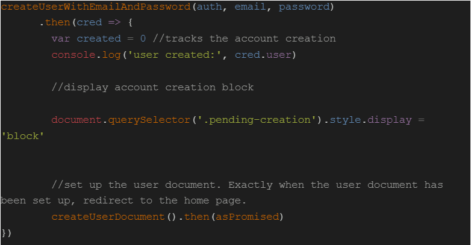
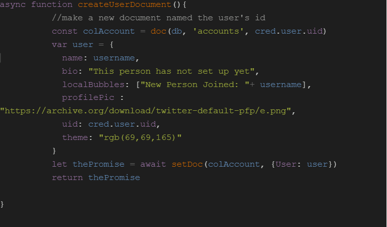
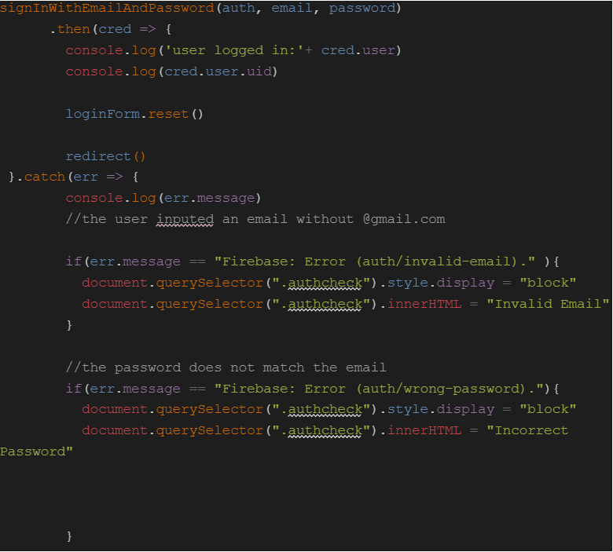
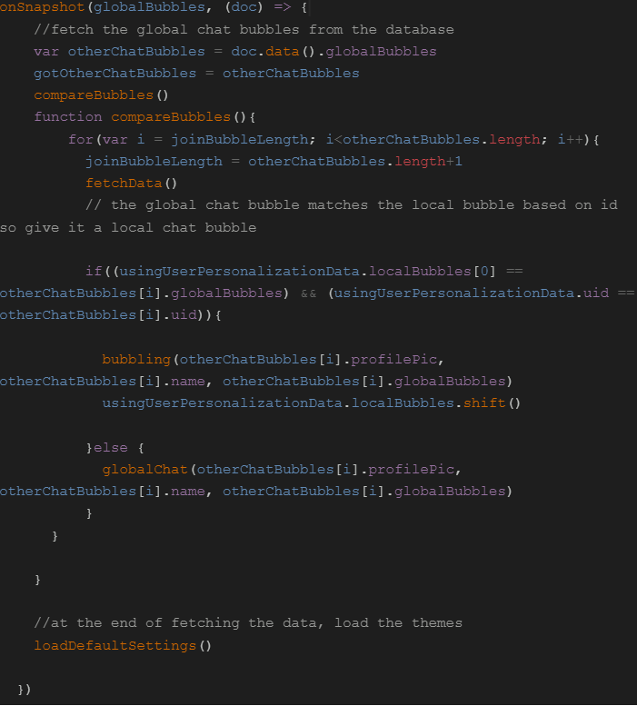

Introduction
Have you ever wished you could speak with individuals all across the world? You can do it by using the free hub Chatly. You can design and make your own profiles and avatars, make accounts and log in to them, change the color scheme of the site, and chat in a public chatroom all within Chatly. Additionally, Chatly has a real-time sidebar that shows the specified users who are currently logged in. Chatly also allows users to submit messages in real-time, meaning that a client sends a message to a server, and the server reupdates the chat box for all clients.
Chatly retrieves and submits "documents" in real-time by connecting to the Firebase Firestore database. The Firebase Auth Service assigns a random auth token to each new user after registration. Each authentication token is matched to the user's document by name. Basically, if a user successfully logs in or registers, I retrieve the document containing the user's authentication token, and while the user is submitting data, it will only be updating that particular document. Additionally, the name of the user who submitted the bubble, their profile image, and the lines of text they wrote are recorded in a particular Firestore document called "GlobalBubbles" which is loaded by any user and manages the global chatroom text bubbles.

Backend Design Process
This is my first time stepping away from Vanilla Javascript and attempting to read and implement the documentation of a different library, Firebase. Before APCSA, I had not idea what methods and nonstatic methods were, so I was a bit confused about what I was reading, I slowly realized that I didn’t understand anything, so I left for videos on Youtube. After glancing at a bunch of Youtube videos, I started to realize that I was going to need a bunch of imports and exports, node modules, the firebase npm, and a bunch of specific methods with Firebase. So let’s start the development process!
Sign Up Page
The createUserWithEmailAndPassword method automatically creates an authentication token in Firebase. Once that is finished successfully I run the code above. The first function I call is createUserDocument which creates the document in the collection of the account with the name of the user auth token generated from createUserWithEmailAndPassword as well as set up a hashtable with the basic variables we want to keep updating for that user. Then if that is successful, we redirect to the next page using the .then() method. The way I successfully create an account is with the following code:
First, we locate the “accounts” collection on Firebase. Then we locate the document with the user auth token in the “accounts” collection. However, that does not exist yet, but since it doesn’t exist, Firebase automatically creates it for us. Now we create an object of all the stuff we want to add for the document: bio, local bubbles (text this user input to the chat), the user id(auth token), profile pic, and the default theme of the website. Then we set the document with the user id, with the current information we have, and await for that to happen. If we cannot successfully set the document, the catch from the previous code block will run.
Login Page
To login the user, if the user has logged out, we use the following method, signInWithEmailAndPassword(auth, email, password), which once again automatically connects to the Firebase Auth service and is a promise, so we want to do the function we want on the inside and have a catch method when we cannot successfully sign in. My basic HTML is one user input for the email and one for the password. Here is the following code:
Simply, when the user has been authenticated by the user auths service to log in by signInWithUsernameAndPassword, we just reset the form and redirect to the home page. It should be noted that signInWithEmailAndPassword automatically compares the username and password to check if they match. If we cannot successfully sign in, we run the catch method that would display a block to the user whether the password and email don’t match, the user does not exist in the system, or the user inputted an invalid email address:
Chatting Bubbles
In order for the server to receive a chat bubble when the user submits text in a textbox, we must have the following: profile picture of the user, name of the user, and the actual chat bubble. My HTML contains a viewport displaying all the past messages sent(scrollable) and an input text box with a submit button. First, let me talk about entering a chat bubble using the following code:
To summarize, in the beginning before adding any new chat boxes, I make sure that I fetch the data. To do this, I try to get the globalBubbles collection and document containing all the chat bubbles. Using all the information inputted from the text-box, I create an object storing the values of what I want the chat bubble to look like, such as name, profile pic, userID, and bubble. I then push it to the values of globalBubbles(not overwriting, but adding to the end), and then I set the the original document to the new one. But how did I get the data in the first place?
Fetching Data
In order to output the data onto the viewport, we need to first fetch the data and then using that data figure out how to display on to the scrolling output. We use the globalbubbles data in order to check all the previous text boxes and insert them into the viewpoint in descending order. Here is the code for getting our data:

To put it simply, we first use the doc.data() method in order to asynchronously receive data from the document. Once successful, we call compareBubbles() in order to loop through each chat bubble object inside the document and add every one of them to the viewport. Each chat bubble goes through a condition to see if the bubble userID matches the current user ID, meaning that the user submitted that chat bubble, so we make it a user bubble. This code uses an onSnapshot() listener meaning that each time the document is updated, the code below runs. Therefore in order to not repeat adding the same bubbles again, we start at the length of the original array and increment from there to our new length to avoid repetition, time complexity is still linear O(n), but cut off more.